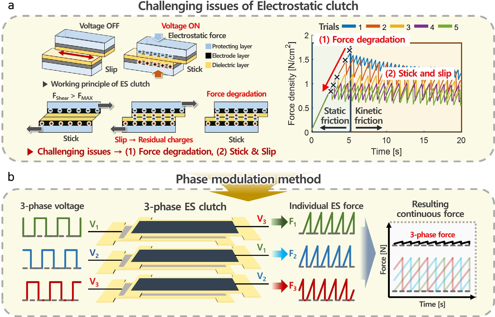
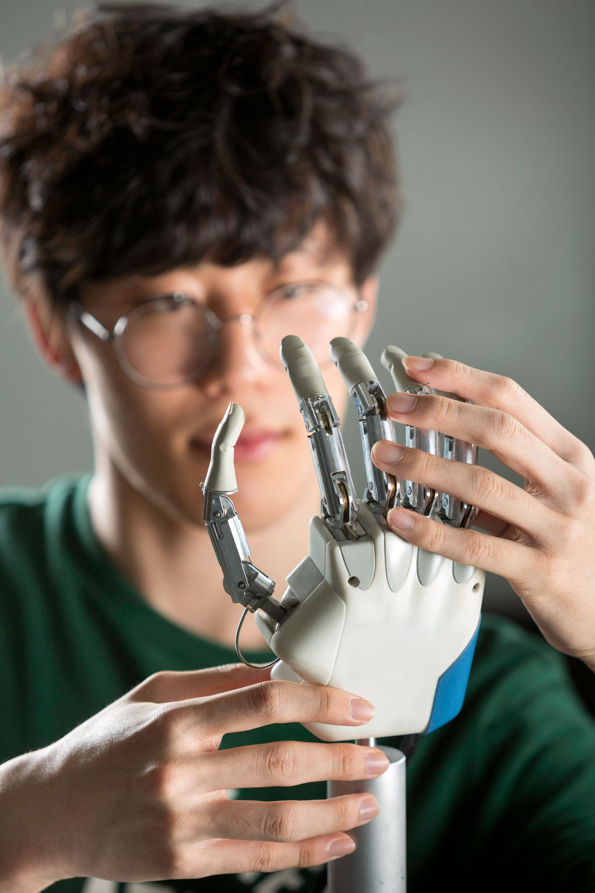
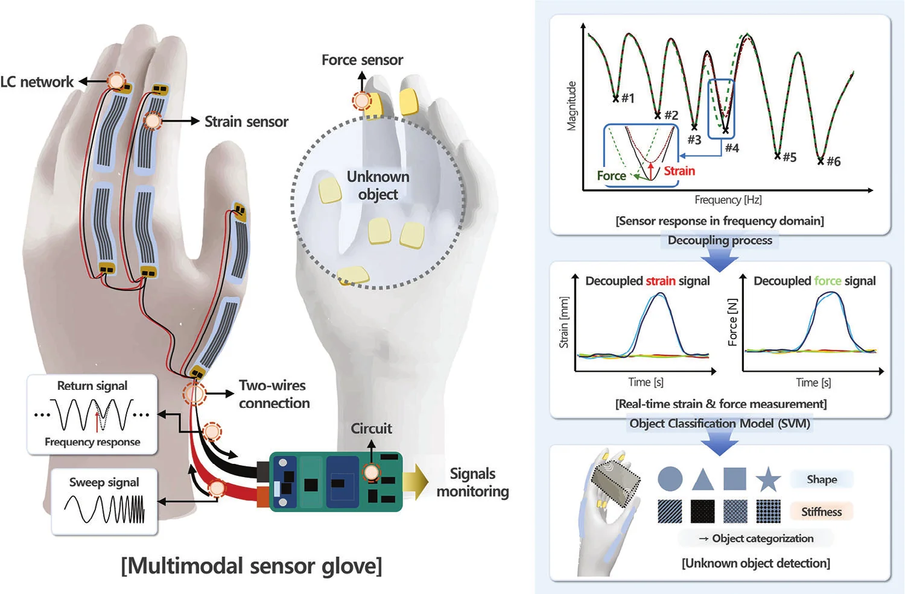
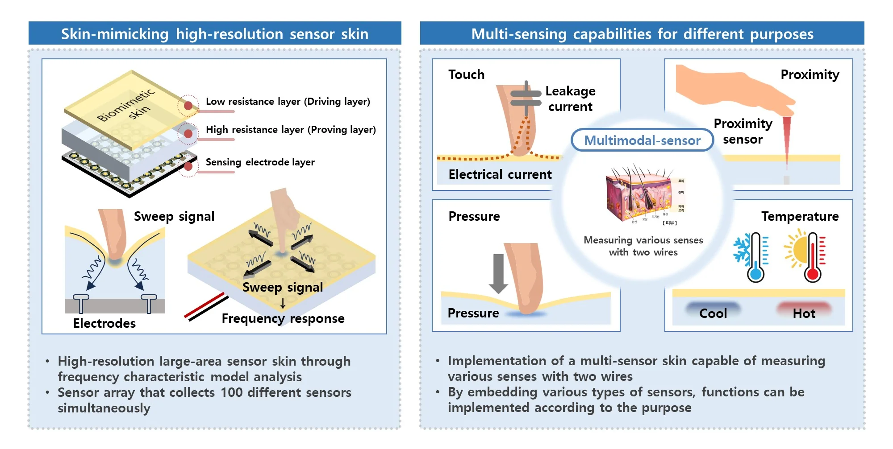
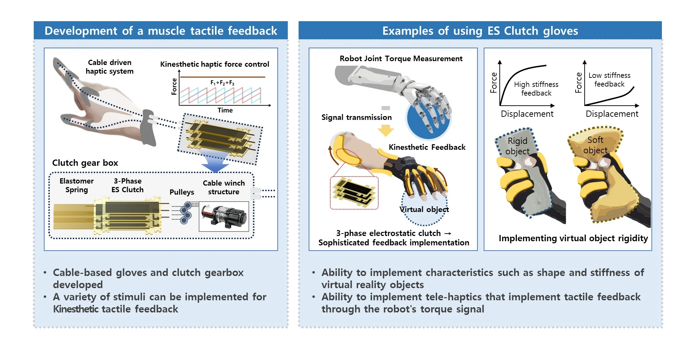
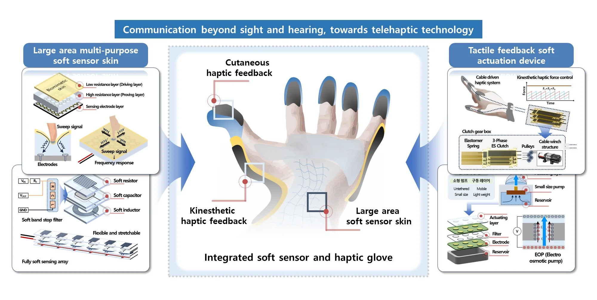

01 / ACTUATION
가변 기계 임피던스 구동
- 3상 전압 변조로 다층 정전기 클러치의 스틱–슬립 힘 변동을 DC·AC 구동보다 10배 줄이고, 힘 전달과 기계 임피던스를 조절했습니다.
- 반능동 소프트 슈트에서 정적 하중 지지와 착용 보조 성능을 검증했습니다.
INTELLIGENT ACTUATION · MULTIMODAL SENSING
한국전자통신연구원(ETRI) 피지컬AI부품센서연구실 연구원대전
구동·센싱 원리를 소자와 부품으로 구현하고, 독립적으로 동작하는 모듈로 구성해 시스템 완성도를 높입니다. 개발한 모듈은 착용형 시스템과 로봇에 통합해 성능과 적용 가능성을 검증합니다.

2019–2026 · 논문 게재 기록
아래 두 사례는 이 연구 목표를 구현한 현재의 대표 결과입니다. 정전기 구동과 최소 배선 센싱을 소자부터 착용형·로봇 시스템까지 검증했습니다.

01 / ACTUATION

02 / SENSING


다양한 물리 원리의 센서와 구동기를 개별 소자로 끝내지 않고, 접촉을 측정한 결과에 따라 힘 전달 특성을 바꾸는 폐루프 인터페이스로 통합합니다.

배준범 (지도교수) · 김지윤 · 정훈의 · 신관섭 · 오현동
국제 학회 발표 4건을 포함해 모두 10건, 그중 8건이 제1저자 발표입니다.
박사과정 중 지도교수의 권유로 학부연구생과 후배 대학원생 6명을 지도했고, 그중 4명이 대학원에 진학했습니다.
소프트 구동·센싱 소자를 제작하고 기구·회로·제어와 연결해 착용형 및 햅틱 시스템으로 구현·검증합니다.
가상 환경에서 로봇·센서·구조 모델과 제어 파이프라인을 검증합니다.
형상 변수와 제작 공정을 함께 설계해 조립 가능한 메커니즘으로 검증합니다.
회로 설계부터 PCB·펌웨어 통합까지 전자 시제품을 완성합니다.
반복 실험과 데이터 처리를 자동화하고 조건·결과를 추적해 재현성을 유지합니다.
지능형 구동기·센서와 착용형·로봇 시스템에 관한 아이디어를 나누고 함께 연구할 기회가 있다면 감사하겠습니다.
마지막 업데이트